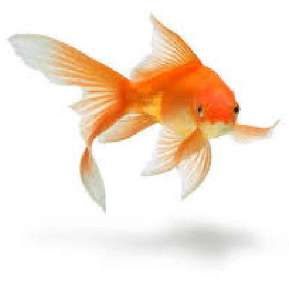

Abe Faerber

Pictured: me (left) and a goldfish (right). I wouldn't mention the goldfish except that it's the picture I have on Canvas. I also use it most everywhere else.Personal info
- Major: Computer Science
- High School: Maeser Academy, class of 2022
- Current Year at USU: Sophomore
- Favorite Ice Cream: Rocky Road
Five favorite books
- Project Hail Mary by Andy Weir
- The Martian by Andy Weir
- What If? by Randall Munroe
- Roadside Picnic by the Strugatsky brothers
- The Way of Kings by Brandon Sanderson
Haiku
This is about the time I was pranking some fish, then had the same prank pulled on me without realizing it.
I walk by the pond,
startling fish, then glance as
birds fly overhead
Personal interests
I spend much of my personal time playing games. I find they are a good way to relax and spend time with people; I play lots of board games with my family and video games with my friends. Having a grip of cards or controller in my hand always makes me feel more comfortable.
When I'm not playing games, I'm often thinking about them. Board game design is my primary creative outlet. I've designed several games, but few have been any good. Hopefully after testing them at Protocon 2025 this year, that will have changed!
I spend most of productive and free time listening to music (except during class!). I mostly like electronic and ambient stuff, as well as certain indie pop and indie rock acts. Some of my favorite albums are Flood by Boris, ✝ by Justice, and Make It It by the Wicked Farleys.
Class Schedule
| Monday | Tuesday | Wednesday | Thursday | Friday | |
|---|---|---|---|---|---|
| 11:00 | English 2010 | English 2010 | English 2010 | ||
| 11:30 | Computer Arch. | Computer Arch. | |||
| 12:00 | |||||
| 12:30 | |||||
| 1:00 | |||||
| 1:30 | |||||
| 2:00 | |||||
| 2:30 | Web Dev | Web Dev | |||
| 3:00 | |||||
| 3:30 | |||||
| 4:00 | Discrete Math | Discrete Math | |||
| 4:30 | |||||
| 5:00 |